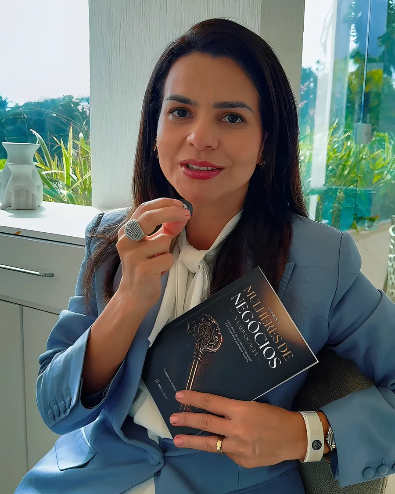
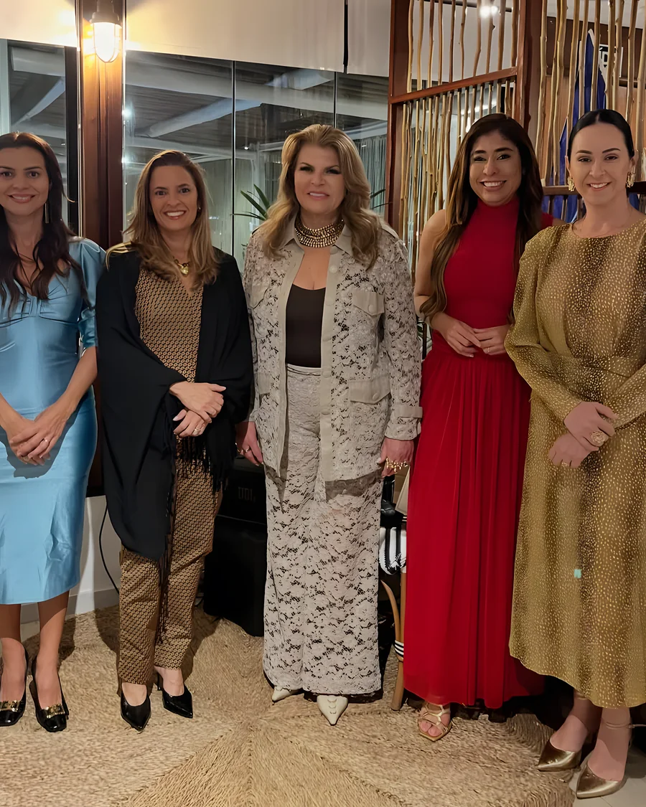
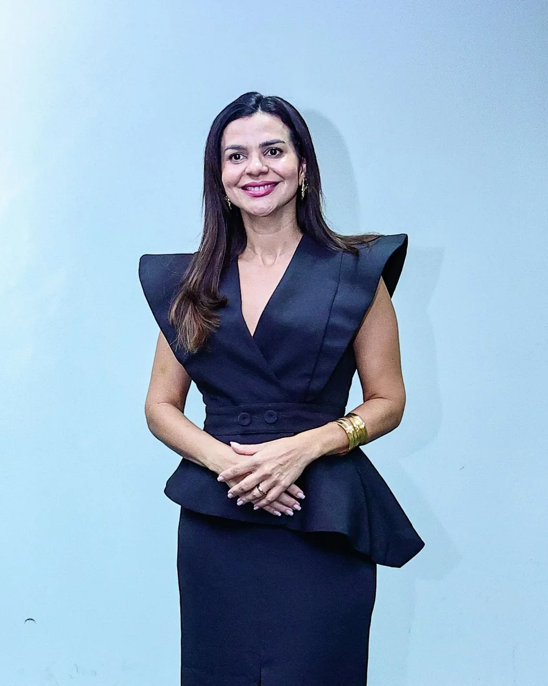
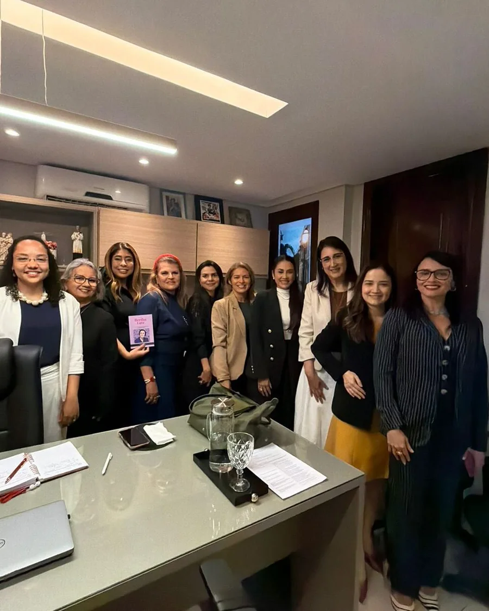
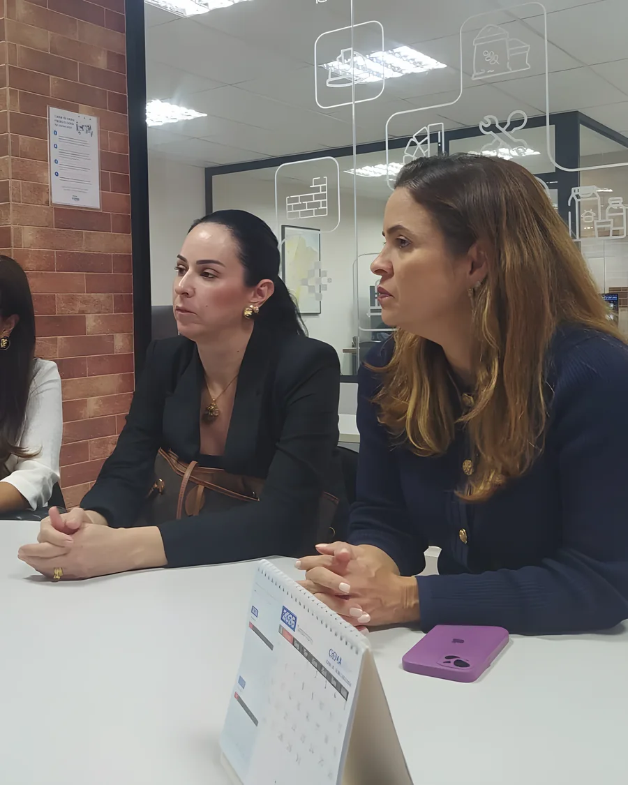
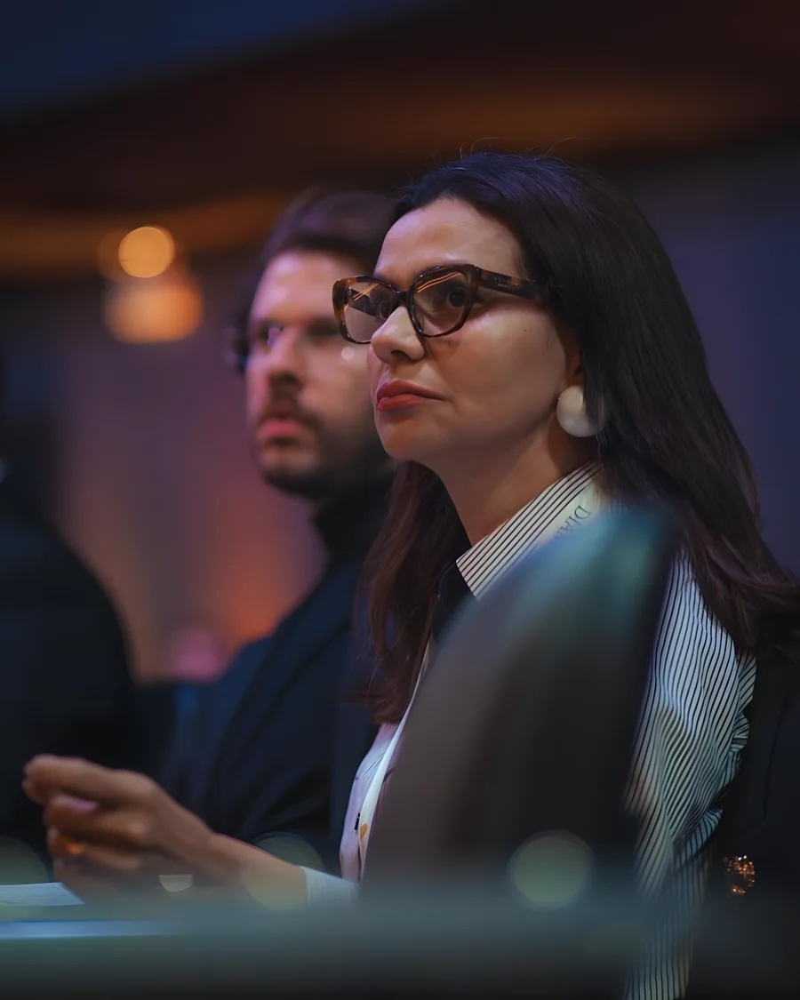
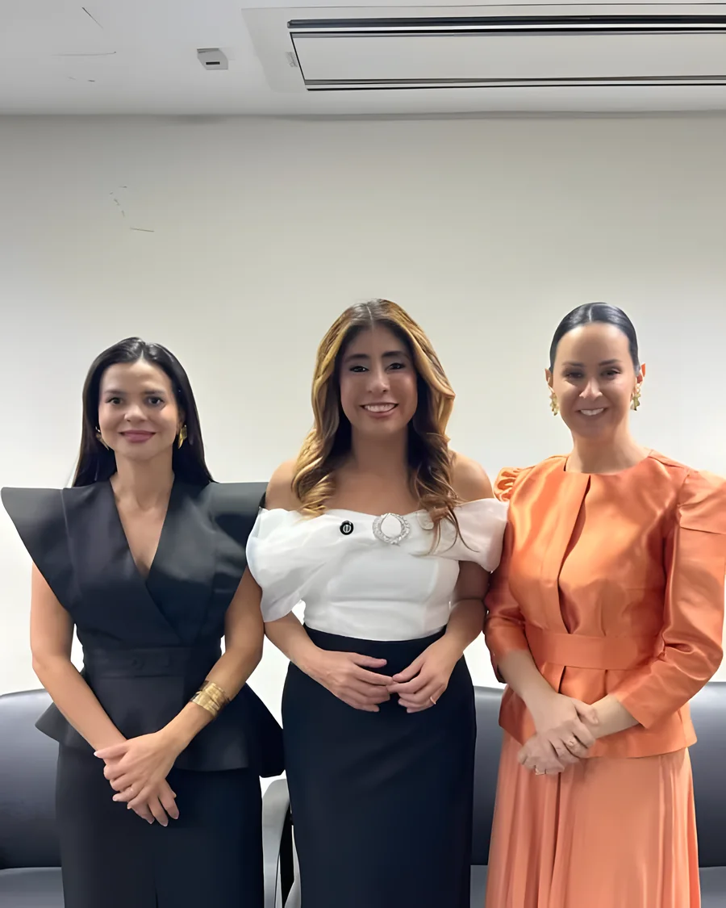

Direito Bancário
Para quem sente que a parcela não fecha e não entende por quê.
- Revisão de contratos de empréstimo e financiamento
- Juros e tarifas questionáveis
- Cobranças indevidas e bloqueios de cartão
Advogada · Direito Bancário e Patrimonial
Em defesa do seu patrimônio: reestruturação de dívidas e revisão de contratos bancários, para você e para a sua empresa.
Quatro frentes com o mesmo objetivo: que o que você construiu continue sendo seu.
Para quem sente que a parcela não fecha e não entende por quê.
Pessoa física ou empresa que paga o banco em dia e não consegue crescer.
Porque um imóvel só é seu quando existe juridicamente.
Organizar hoje o que a família vai receber amanhã.
O gerente representa os interesses do banco, que nem sempre coincidem com os seus. É no contrato que aparece o que pode ser questionado.
Cédula de Crédito Bancário
Instrumento particular · Pessoa jurídica
Cláusula 4ª. O EMITENTE pagará ao CREDOR o valor principal acrescido de juros remuneratórios de 3,89% ao mês, capitalizados mensalmente, calculados sobre o saldo devedor.
Cláusula 5ª. Incidirão sobre a operação tarifa de cadastro, tarifa de avaliação de bens e despesas de registro, debitadas no ato da liberação.
Cláusula 7ª. Fica o EMITENTE ciente da contratação de seguro prestamista vinculado à operação, cujo prêmio integra o valor financiado.
Cláusula 9ª. Em caso de atraso, serão devidos comissão de permanência, juros moratórios e multa, cumulativamente, até a efetiva liquidação.
EmitenteCredor
A taxa contratada é comparada com a média de mercado do Banco Central para o mesmo tipo de operação.
Nem toda tarifa cobrada na liberação do crédito tem previsão válida.
Seguro imposto como condição do empréstimo merece análise.
Encargos cobrados ao mesmo tempo, somados, podem não ser devidos.
Contrato ilustrativo. Cada caso depende da leitura dos documentos reais.
Online para todo o Brasil, com a mesma atenção do atendimento presencial em São Luís.
Pelo formulário ou pelo WhatsApp, em poucas linhas.
Contratos, extratos e matrículas são analisados com cuidado.
Você recebe as alternativas, os riscos e o que cada uma exige.
Negociação ou medida judicial, com retorno a cada etapa.
“Porque no fim, nunca foi só sobre imóveis. É sobre pessoas, histórias e o que cada escolha representa lá na frente.”
Sou feita de muitas jornadas. Fui enfermeira por 20 anos antes de me tornar advogada, e a enfermagem me ensinou o valor do cuidado e do olhar atento. A advocacia me trouxe força e a coragem de lutar pelo que é certo.
Hoje sou sócia do CSM Advocacia, em São Luís, e atendo pessoas e empresas de todo o Brasil e de quem investe aqui morando fora. Meu trabalho é proteger o patrimônio de quem me procura: do contrato com o banco à matrícula do imóvel.
Estudo, representação e presença onde as decisões sobre o Direito acontecem.






Costta, Saboya e Marques. Três sócias e uma atuação que vai do banco ao campo.

Ao lado de Lorena Saboya e Luciana Marques, Priscilla conduz um escritório com sede em São Luís e atuação em todo o Brasil.
Quando o seu caso pede outra área, a equipe acompanha de perto, sem você precisar procurar de novo.
Nem toda proposta é vantajosa. Antes de assinar, vale comparar o custo total, as taxas e o que muda no seu patrimônio. Uma renegociação mal feita pode alongar o problema em vez de resolvê-lo.
Os bancos precisam reservar valores para cobrir dívidas não pagas (o chamado provisionamento). Perto do fechamento do ano, muitas instituições revisam essas carteiras, o que costuma abrir espaço para conversa.
O primeiro passo é um diagnóstico: quanto do faturamento vai para o banco, em quais contratos e com quais encargos. A partir disso dá para desenhar uma reestruturação que preserve a operação.
Bloqueio indevido, compra não reconhecida e cobrança em duplicidade podem ser contestados. Guarde comprovantes, protocolos e prints do atendimento: eles são a sua prova.
Quem comprou nos últimos cinco anos e pagou o imposto sobre valor superior ao da compra pode pedir a restituição, desde que tenha a documentação certa.
Não. Cada bem tem uma natureza, e nem todo imóvel se encaixa bem na estrutura. A holding precisa ter um objetivo claro, senão gera custos que não se pagam.
Preencha o essencial. A mensagem chega pronta no WhatsApp do escritório, e tudo o que você contar fica em sigilo.